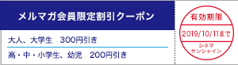
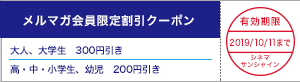

|
シネマサンシャインメールマガジン 2019/9/27号 |
 |
毎月1日は映画サービスデー
どなたさまでも1,200円でご鑑賞いただけます。 次回は来週10/1（火）です！ ※3D、4DX、IMAX、ATMOS、dts-x、ScreenX、BESTIAは別途追加料金が必要となります。 |
オススメ作品
『ジョーカー』
10/4（金）公開
©2019 Warner Bros. Ent. All Rights Reserved TM & c DC Comics
「バットマン」の悪役として広く知られるジョーカー誕生秘話を、ホアキン・フェニックス主演＆トッド・フィリップス監督で映画化。 第79回ベネチア国際映画祭のコンペティション部門に出品され、DCコミックスの映画化作品としては史上初めて最高賞の金獅子賞を受賞。
大都会で大道芸人として生き、コメディアンを夢見るアーサー。 孤独なひとりの男が悪のカリスマに変貌する物語。 ジャック・ニコルソン、ヒース・レジャー、ジャレット・レトが演じてきた悪のカリスマ――"ジョーカー"。 アカデミー賞常連のスタッフ／キャストが贈る、衝撃のサスペンス・エンターテイメント！
大都会で大道芸人として生き、コメディアンを夢見るアーサー。 孤独なひとりの男が悪のカリスマに変貌する物語。 ジャック・ニコルソン、ヒース・レジャー、ジャレット・レトが演じてきた悪のカリスマ――"ジョーカー"。 アカデミー賞常連のスタッフ／キャストが贈る、衝撃のサスペンス・エンターテイメント！
監督：トッド・フィリップス
出演：ホアキン・フェニックス、ロバート・デ・ニーロ、ザジー・ビーツ
出演：ホアキン・フェニックス、ロバート・デ・ニーロ、ザジー・ビーツ

『HiGH＆LOW THE WORST』
10/4（金）公開
©2019「HiGH&LOW THE WORST」製作委員会©高橋ヒロシ(秋田書店) HI-AX
「HiGH＆LOW」シリーズと、高橋ヒロシ原作の大人気不良漫画「クローズ」「WORST」のクロスオーバー作品。 『HiGH&LOW』から全国の札付きの粗暴者が集まる"鬼邪高校"、「クローズ」「WORST」、幹部以外全員スキンヘッドの"殺し屋・鳳仙学園"が登場。 鳳仙学園の頭を志尊淳、鬼邪高校の頭を山田裕貴、大物転入生に川村壱馬(THE RAMPAGE)が大抜擢。 まとまりはないが個々の力は最強の鬼邪高VS一枚岩に組織化された鳳仙、果たして世紀の頂上決戦に勝つのはどっちだ？！
監督：久保茂昭
出演：川村壱馬 前田公輝 吉野北人 佐藤流司 神尾楓珠 福山康平 龍 鈴木昂秀 うえきやサトシ 中島健 志尊淳
出演：川村壱馬 前田公輝 吉野北人 佐藤流司 神尾楓珠 福山康平 龍 鈴木昂秀 うえきやサトシ 中島健 志尊淳
上映作品

10/4（金）公開
『蜜蜂と遠雷』


ニュース
○「シネマサンシャインららぽーと沼津」10.4（金）オープン！
全10スクリーン・約1,800席、最新の映画上映設備を備えたシネマコンプレックスとして「三井ショッピングパーク ららぽーと沼津」内にオープンいたします。 プレミアムシアターとして全世界的な評価を集めるIMAX?社の最新鋭シアター「IMAX?レーザー」。 体感型アトラクションシアター「4DX」と、3面マルチプロジェクション上映システム「ScreenX」が融合した超・体感型シアター「4DX with ScreenX」。 佐々木興業オリジナル開発の劇場規格「BESTIA（ベスティア）」など、最先端のシネマテクノロジーが結集した新世代のシネマコンプレックスです。
○シネマサンシャイン「おやこシネマ」開催決定
子育て中のママ、パパがお子さま連れで一緒に映画を鑑賞できる上映会を開催いたします。
小さいお子さま連れでの映画鑑賞は…
「びっくりして泣いてしまったら…」
「暗いので子供が怖がるかも…」
「子供がおしゃべりしたり歩き回るかも…」
そんな不安や心配がつきないママ、パパの為の上映会です。
音量が通常よりも小さめで、照明も明るめに設定されており、
小さなお子様でも怖がることなくご鑑賞いただけます。
今後の実施は下記となります。
10月21日(月)『イエスタデイ』※グランドシネマサンシャインのみ
10月21日(月)『最高の人生の見つけ方』※重信のみ
10月21日(月)『空の青さを知る人よ』※沼津のみ
10月29日(火)『マレフィセント2』

小さいお子さま連れでの映画鑑賞は…
「びっくりして泣いてしまったら…」
「暗いので子供が怖がるかも…」
「子供がおしゃべりしたり歩き回るかも…」
そんな不安や心配がつきないママ、パパの為の上映会です。
音量が通常よりも小さめで、照明も明るめに設定されており、
小さなお子様でも怖がることなくご鑑賞いただけます。
今後の実施は下記となります。
10月21日(月)『イエスタデイ』※グランドシネマサンシャインのみ
10月21日(月)『最高の人生の見つけ方』※重信のみ
10月21日(月)『空の青さを知る人よ』※沼津のみ
10月29日(火)『マレフィセント2』
○4DX追加料金が高校生以下半額の500円に！【期間限定】
シネマサンシャインの4DXシアターでは、現在キャンペーン期間中につき高校生以下（高校生・中学生・小学生・幼児）の4DX追加料金（通常 1,000円）が半額の500円になります！
通常鑑賞料金（1,000円）＋4DX追加料金（500円）＝1,500円
※3D作品の場合は上記にさらに400円が加算されます。
※一部特別興行は適用とならない場合があります。
※無料鑑賞（メンバーズ会員無料鑑賞、招待券等）は適用外。
▼シネマサンシャイン4DXシアター導入劇場はこちら
グランドシネマサンシャイン、平和島、沼津、大和郡山、北島、エミフルMASAKI、姶良

通常鑑賞料金（1,000円）＋4DX追加料金（500円）＝1,500円
※3D作品の場合は上記にさらに400円が加算されます。
※一部特別興行は適用とならない場合があります。
※無料鑑賞（メンバーズ会員無料鑑賞、招待券等）は適用外。
▼シネマサンシャイン4DXシアター導入劇場はこちら
グランドシネマサンシャイン、平和島、沼津、大和郡山、北島、エミフルMASAKI、姶良
○シネマサンシャインの新しい会員サービス『シネマサンシャイン リワード』スタート！
もっともっとオトクに映画を観よう！６ポイントで１回鑑賞無料！毎週木曜は1,100円鑑賞などお得なサービスがいっぱいです！シネマサンシャインアプリから新しい会員サービスへ登録いただけます。 是非ご登録ください。
全劇場で対応開始！
※年会費500円あり
全劇場で対応開始！
※年会費500円あり

○メルマガ会員限定割引クーポンプレゼント！
メルマガ会員様限定でお得な割引クーポンをプレゼント！
以下の画面をチケット購入時にご提示ください。
PCでご覧のお客様は該当部分を印刷してご提示ください。

以下の画面をチケット購入時にご提示ください。
PCでご覧のお客様は該当部分を印刷してご提示ください。

※有効期限は10月11日までになります。
※割引券1枚で2名様まで有効。 他の割引サービスとの併用はできません。
※特別興行などご利用いただけない場合がございます。
※インターネット購入（e-box、ムビチケ)ではご利用いただけません。
※期間中何回でもご利用頂けます。
池袋、ユーカリが丘、大和郡山、北島、下関、姶良の自動券売機では下記QRをご利用ください。
【一般・大学生】

【高校生以下】

【一般・大学生】
【高校生以下】
ムービークイズ
○前回のクイズ
『アド・アストラ』の監督ジェームズ・グレイの監督デビュー作品『リトル・オデッサ』に出演し、11/8公開『ターミネーター:ニュー・フェイト』でリンダ・ハミルトンとともに久しぶりにターミネーター作品に出演する人は誰でしょう。
『アド・アストラ』の監督ジェームズ・グレイの監督デビュー作品『リトル・オデッサ』に出演し、11/8公開『ターミネーター:ニュー・フェイト』でリンダ・ハミルトンとともに久しぶりにターミネーター作品に出演する人は誰でしょう。
答え：エドワード・ファーロング
『ターミネーター２』で演じたジョン・コナー役に続投するそうです。
『ターミネーター２』で演じたジョン・コナー役に続投するそうです。
○今回のクイズ
ティム・バートン監督作『バットマン』でジョーカーを演じたジャック・ニコルソンと10/4公開『ジョン・ウィック：パラベラム』に出演しているアンジェリカ・ヒューストンは、80年代に二作品で共演しています。 『郵便配達は二度ベルを鳴らす』ともう一作品はなんでしょう。
ティム・バートン監督作『バットマン』でジョーカーを演じたジャック・ニコルソンと10/4公開『ジョン・ウィック：パラベラム』に出演しているアンジェリカ・ヒューストンは、80年代に二作品で共演しています。 『郵便配達は二度ベルを鳴らす』ともう一作品はなんでしょう。
答えは、次回のシネマサンシャインメールマガジンで！